CUBE Setup
Setting up CUBE on your
local machine.
A step-by-step guide to installing the required software, preparing the tutorial files, and running CUBE on Windows, macOS, or Linux.
The supplied package contains a compiled and installed CUBE executable. Install Docker Desktop on Windows/macOS or Docker Engine on Linux, then load the package and run the examples. You do not need CUBE source code, a compiler, or a cluster account.
Set aside about 45 minutes for first-time setup, with an internet connection and permission to install software. Windows setup may require a restart. The first CUBE test is short; the full examples take much longer.
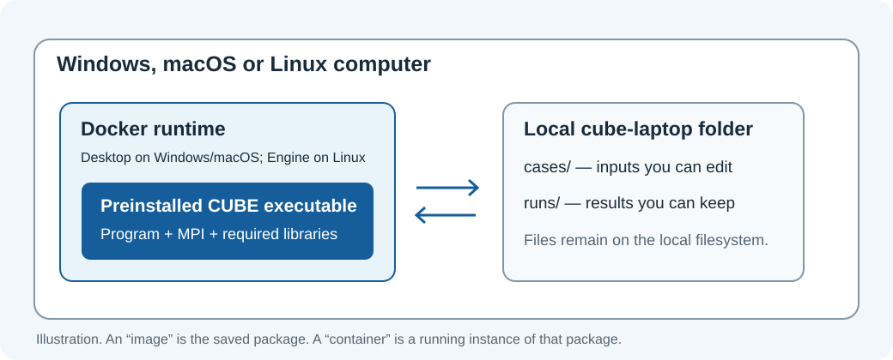
Key terms
- Docker Desktop
- An application you install. It supplies the environment in which our CUBE program runs.
- Docker Engine
- The Docker service used in this Linux walkthrough. It runs in the background and is controlled from Terminal.
- Docker image
- A software package containing the compiled CUBE executable and its required runtime libraries.
- Container
- A running instance of that package. The
docker runcommand starts one, and Docker removes it when you leave it or the run finishes. Result files remain in the local tutorial folder. - Terminal / PowerShell
- An application for entering commands. The required commands are provided in this guide.
Check your computer
- Click the Apple symbol at the top-left of your Mac’s screen.
- Choose About This Mac.
- Look for Chip or Processor. “Apple M…” means Apple Silicon. “Intel…” means an Intel Mac.
- Choose the matching Mac button above. The commands and download below will update.
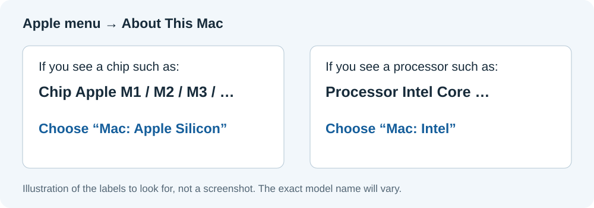
- Click Start, then Settings.
- Open System, then About.
- Under Device specifications, find System type.
- This walkthrough is for a supported 64-bit Windows computer with an x64-based processor, normally Intel or AMD. If you see ARM-based processor, ask the organizer before continuing.
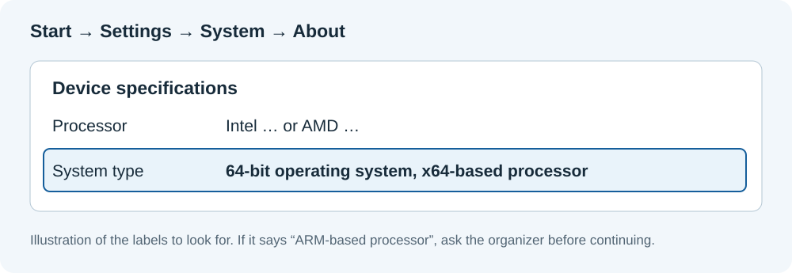
- Open Terminal from the application menu. On Ubuntu, Ctrl + Alt + T normally opens it.
- Run the following commands separately. In most Linux terminals, use Ctrl + Shift + V to paste, then press Enter.
cat /etc/os-releaseuname -mIn the first output, find ID and VERSION_ID. Select Ubuntu only for ID=ubuntu, Debian for ID=debian, or Another distribution otherwise. The second command reports the processor architecture: x86_64 selects Intel/AMD; aarch64 or arm64 selects ARM64.
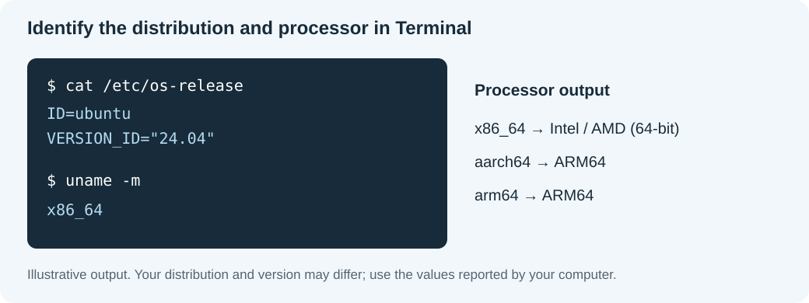
This package supports 64-bit Intel/AMD and ARM64 processors. For another architecture, contact the organizer.
Use a supported operating-system version and allow several gigabytes of free storage. Each full CUBE run creates about half a gigabyte of results. Docker and ParaView also need space and memory; run the short test before arriving at the workshop.
Install and configure Docker
If Docker Desktop is already installed, open it and run docker version from your usual user account. If both Client and Server are shown for the local Docker Desktop installation, continue to step 3.
If Docker is already installed, retain the existing installation and complete the account and engine checks below before continuing to step 3. This tutorial requires a standard Docker Engine on this laptop, accessible from your normal account without sudo. A successful docker version alone does not confirm compatibility with the workshop launcher.
Enable WSL 2 on Windows
Docker uses a Windows feature called WSL 2 to run Linux programs. You will still use your normal Windows desktop.
- Save your work, because a restart may be needed.
- Open Start and type PowerShell. Choose Run as administrator. If your computer is managed and you cannot do this, ask your IT team.
- In the PowerShell window, copy the following command, paste it, then press Enter:
wsl --install --no-distributionWait until it finishes. If Windows asks you to restart, restart now. This command installs WSL without adding a separate Ubuntu desktop or asking you to create a Linux account. If WSL is already installed, continue with the update below.
Open Administrator PowerShell again and run:
wsl --updateIf the command reports that virtualization is unavailable, ask IT or the organizer for help. See Microsoft’s installation help. Close this administrator window when finished; the CUBE steps later use a normal PowerShell window.
Download and install Docker
- Open Docker’s official Windows download page.
- Click Docker Desktop for Windows – x86_64, the first download button shown in the screenshot.
- When the download finishes, open Downloads and double-click Docker Desktop Installer.exe.
- Follow the installer. If it offers installation modes, use Per-user unless your IT team says otherwise. When asked for a backend, choose WSL 2 or keep Use WSL 2 instead of Hyper-V selected. Wording varies by Docker version.
- Finish the installation and restart if requested. Open Start, type Docker Desktop, and open it.
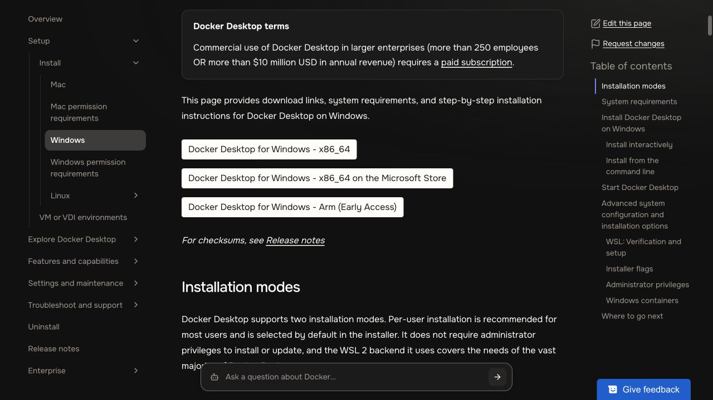
- Open Docker’s official Mac download page.
- Click Docker Desktop for Mac with Apple silicon — the left button in the screenshot.
- Click Docker Desktop for Mac with Intel chip — the right button in the screenshot.
- Open Finder, click Downloads, and double-click the downloaded Docker.dmg file.
- In the installer window, drag the Docker icon onto the Applications folder. Wait for copying to finish.
- In Finder, open Applications, then double-click Docker. If macOS asks whether you want to open the downloaded application, confirm only that it is the Docker application you obtained from the official site.
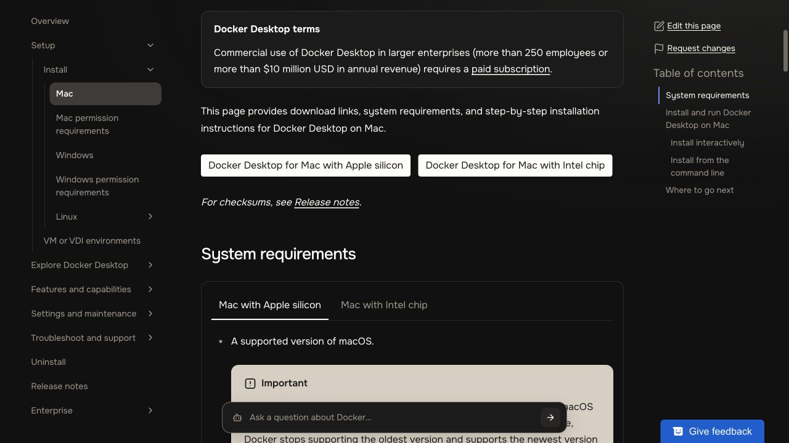
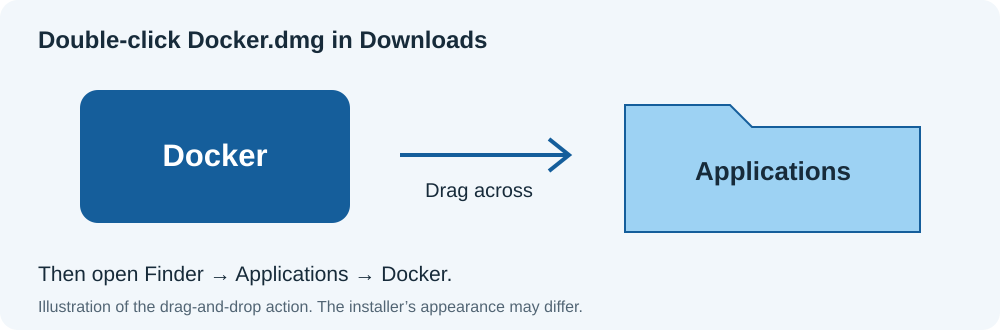
Install Docker Engine
This Linux route uses the standard local Docker Engine service. Docker Desktop is not required. The existing workshop launcher does not support rootless Docker or user-namespace remapping; consult the organizer if those modes are required on your system.
Ubuntu: add the official Docker repository
Confirm ID=ubuntu in step 1 and check the supported releases in Docker’s Ubuntu installation guide. Copy each block in full, then press Enter. When sudo requests a password, enter your Linux login password; characters are not displayed as you type.
sudo apt update
sudo apt install ca-certificates curl
sudo install -m 0755 -d /etc/apt/keyrings
sudo curl -fsSL https://download.docker.com/linux/ubuntu/gpg -o /etc/apt/keyrings/docker.asc
sudo chmod a+r /etc/apt/keyrings/docker.ascThe following block registers the repository for the distribution and processor detected on this computer. Include the opening line and the closing EOF line when copying.
sudo tee /etc/apt/sources.list.d/docker.sources >/dev/null <<EOF
Types: deb
URIs: https://download.docker.com/linux/ubuntu
Suites: $(. /etc/os-release && echo "${UBUNTU_CODENAME:-$VERSION_CODENAME}")
Components: stable
Architectures: $(dpkg --print-architecture)
Signed-By: /etc/apt/keyrings/docker.asc
EOF
sudo apt updateInstall the Docker packages
sudo apt install docker-ce docker-ce-cli containerd.io docker-buildx-plugin docker-compose-pluginRead the package-manager prompt and confirm the installation. If it reports an error, stop and check the official distribution guide before continuing.
Debian: add the official Docker repository
Confirm ID=debian in step 1 and check the supported releases in Docker’s Debian installation guide. Copy each block in full, then press Enter. When sudo requests a password, enter your Linux login password; characters are not displayed as you type.
sudo apt update
sudo apt install ca-certificates curl
sudo install -m 0755 -d /etc/apt/keyrings
sudo curl -fsSL https://download.docker.com/linux/debian/gpg -o /etc/apt/keyrings/docker.asc
sudo chmod a+r /etc/apt/keyrings/docker.ascThe following block registers the repository for the distribution and processor detected on this computer. Include the opening line and the closing EOF line when copying.
sudo tee /etc/apt/sources.list.d/docker.sources >/dev/null <<EOF
Types: deb
URIs: https://download.docker.com/linux/debian
Suites: $(. /etc/os-release && echo "$VERSION_CODENAME")
Components: stable
Architectures: $(dpkg --print-architecture)
Signed-By: /etc/apt/keyrings/docker.asc
EOF
sudo apt updateInstall the Docker packages
sudo apt install docker-ce docker-ce-cli containerd.io docker-buildx-plugin docker-compose-pluginRead the package-manager prompt and confirm the installation. If it reports an error, stop and check the official distribution guide before continuing.
Other Linux distributions
Use the official instructions for your distribution: Fedora, RHEL, or the complete installation list. Do not use the Ubuntu/Debian commands on another distribution. For derivative distributions, ask the administrator to confirm the supported repository.
SELinux-enabled systems may require additional permission or labeling configuration for the tutorial folder. Have the administrator review that configuration; do not disable SELinux. This walkthrough has not been validated on those hosts.
Check that the Docker service is running
sudo systemctl status docker --no-pagerThe status should include active (running). If the service is installed but inactive, start it with:
sudo systemctl start dockerAllow Docker access from your normal account
The workshop launcher must run as your usual Linux user so that result files belong to that account. Membership in the Docker group grants administrator-equivalent access. On a managed computer, obtain the administrator’s approval for this step. See Docker’s explanation of Linux permissions.
sudo groupadd --force docker
sudo usermod -aG docker "$USER"Save your work, sign out of your Linux desktop session, and sign back in. Open a new Terminal window after signing back in so the updated group membership takes effect.
Verify access without sudo
docker versionBoth Client and Server must appear without a permission error. Run the CUBE launchers from this normal account, without sudo. If Docker remains inaccessible, resolve the account permissions with the administrator before continuing.
Confirm engine compatibility
The Docker connection must target this laptop; a remote server cannot use the tutorial folder on your laptop. If the installation is managed by an administrator, have them confirm that it uses the local standard Engine before proceeding.
Run this read-only check:
docker info --format '{{json .SecurityOptions}}'The output must not contain rootless or userns. Other entries, such as seccomp, apparmor or selinux, may appear. If either unsupported mode is listed, stop and contact the organizer; do not change an institution-managed configuration yourself.
docker version succeeds without sudo, and neither rootless mode nor user-namespace remapping is enabled. A Docker Desktop window is not needed on this Linux route.Complete the initial configuration
Read Docker’s license agreement and follow your institution’s software policy. If the setup offers recommended settings, use them unless your IT team has provided other instructions. A Docker Hub account is not required by this offline CUBE kit; you can skip optional account creation if Docker offers that option. Institution-managed sign-in requirements still apply.
Leave Docker Desktop open. An empty Containers screen is normal: you have not started a CUBE run yet. If the bottom of the window says Resource Saver mode, Docker is temporarily paused to conserve resources; a Docker command will reactivate it.
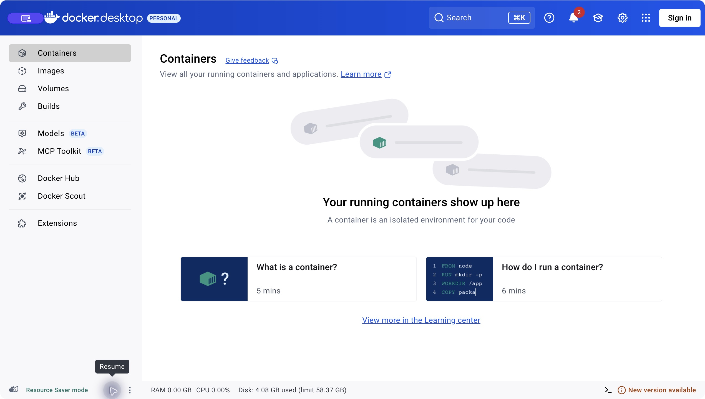
Download the CUBE tutorial package
Download one ZIP file using the button below. It contains the CUBE package, input files, mesh, launchers, and an offline copy of this guide.
Selected computer: Mac with Apple Silicon
Download for Mac (Apple Silicon)CUBE-laptop-2026-b6d6cf6a-arm64.zip
Contains the ARM64 CUBE image and all tutorial files.
run.sh and run.ps1.This is different from the Docker installer. Docker is the runtime installed in step 2. This ZIP is the workshop’s CUBE software and exercise data.
.part or .crdownload is still downloading.Extract the ZIP and locate the working folder
- Open Finder → Downloads.
- Double-click the CUBE ZIP you just downloaded. Safari may already have extracted it.
- Open the extracted cube-laptop folder. If there is an outer folder with the ZIP’s name, open that first.
- Open File Explorer → Downloads.
- Right-click the CUBE ZIP and choose Extract All…. Click Extract and wait for it to finish.
- Open the extracted folder, then open cube-laptop inside it. Keep opening the extracted folders until you see run.ps1 and cases together.
- If file extensions are hidden, use File Explorer’s View → Show → File name extensions option so you can recognize
.ps1,.tar, and.sha256.
- Open the file manager and locate the downloaded ZIP, normally in Downloads.
- Right-click the ZIP and choose Extract Here or Extract…. The menu label depends on the desktop environment.
- Open the extracted cube-laptop folder. Confirm that run.sh and cases are visible in the same folder.
Extract the files as your normal user into a folder you own. Retain the inner .tar and its .sha256 file without extracting or renaming them.
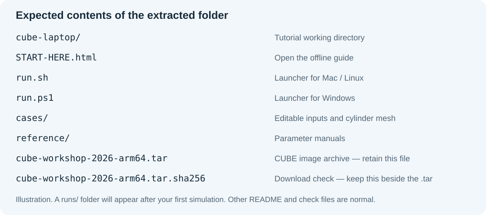
.tar file is opened by Docker; leave that file packed.Choose a local folder with write permission, such as Downloads or a dedicated work folder. Avoid a network drive or a folder being actively synchronized by OneDrive/iCloud during a run.
run.sh, run.ps1, cases, the large .tar file, and its matching .tar.sha256 file.Open a command window in that folder
A command is one line of text followed by Return. Copy only the command in the box, not the surrounding explanation. Run one command at a time and wait for it to finish.
- Press Command + Space, type Terminal, and press Return.
- In Terminal, type
cdfollowed by one space. Do not press Return yet.cdmeans “change to this folder”. - In Finder, go up one level with Command + ↑ so that you can see the cube-laptop folder itself.
- Drag that folder from Finder into the Terminal window. Its full location will appear after
cd. - Press Return.
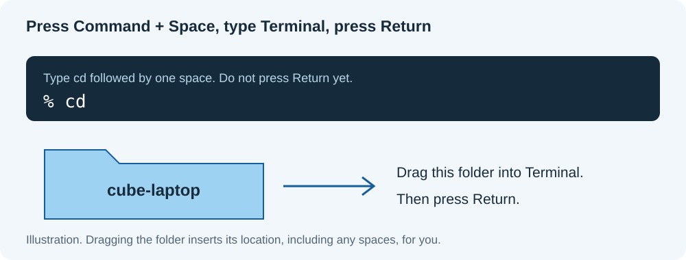
- In File Explorer, open the extracted cube-laptop folder from step 4.
- Click the address bar at the top of File Explorer. It shows the folder’s location. This is not the search box on the right.
- Type
powershelland press Enter. - A PowerShell window should open in the same folder. Use this normal window for CUBE, not the administrator window from the WSL installation.
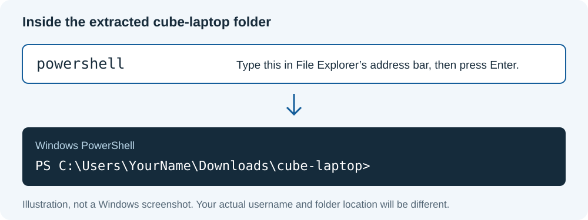
cube-laptop>, though the beginning of the path will be different on your computer.- Open the extracted cube-laptop folder in the file manager.
- Right-click a blank area of the folder and select Open in Terminal, if available.
- If that option is unavailable, open Terminal from the application menu, type
cdfollowed by one space, and drag the cube-laptop folder into the window. Press Enter. - Use Ctrl + Shift + V to paste commands in most Linux terminal applications. Enter the command itself, without any
$prompt shown in illustrations.
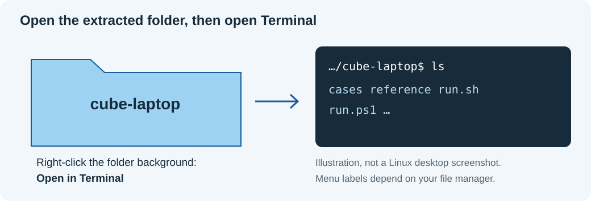
Use your normal account for the commands below. Do not add sudo to sh run.sh; the launcher checks the user identity to preserve file ownership.
Check the folder
Copy this command into the new window and press Return:
lsYou should see filenames including run.sh, run.ps1, and cases. If you do not, repeat the folder-opening instructions above.
Check Docker
docker versionYou should see both a Client section and a Server section. The version numbers do not have to match this guide.
docker version shows both Client and Server. If it shows only Client or a connection error, open Docker Desktop and try again.If it shows a connection or permission error, return to the Docker service and account checks in step 2.Load the preinstalled CUBE package
Keep the same command window open. The setup command checks the download, loads CUBE into Docker, and prints a confirmation.
Windows may mark downloaded scripts as blocked. For the trusted workshop script you just downloaded, run this once:
Unblock-File .\run.ps1No output is normal if that command succeeds. Then run the setup command below. If PowerShell says “running scripts is disabled”, use the specific troubleshooting step.
sh run.sh setupThe first load may take a few minutes. Leave the window open. If CUBE is already loaded, this step can finish almost immediately.
CUBE image ready for arm64. Next: sh run.sh smokeThe arm64 image supports Apple Silicon and ARM64 Linux. The amd64 image supports Intel/AMD computers, including Intel Macs.
Optional: inspect the installed image in Docker Desktop
Open Docker Desktop, click Images in the left sidebar, and search for cube-workshop. You should see a tag matching your computer.
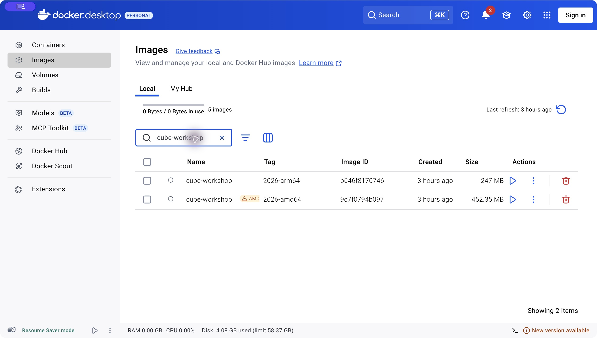
b6d6cf6a, such as 2026-b6d6cf6a-arm64. Your laptop normally needs only one architecture. “Unused” is normal when no run is active.Use the commands in the next steps to start CUBE. They connect the tutorial folder to the container; the dashboard’s generic Run button does not set that up for you.
Verify the installation with a short test
Copy this command into the same window:
sh run.sh smokeThe smoke command runs ten simulation steps to verify execution and output files. It is an installation check, not a full simulation.
You will first see a run-directory message, then a short results summary. On the tested Apple Silicon machine this took about five seconds; allow longer on another machine or on the first run.
PASS: execution and output checks. See README for full-case reference values.Run identifiers and timings can vary. Successful verification is indicated by PASS.
If the output begins Run directory: /work/runs/…, /work means your cube-laptop folder. Open its runs subfolder to find the new result. You do not need to find a separate folder called “work” on your computer.
Run CUBE yourself
CUBE needs two things: the program, called cube, and a parameter file ending in .toml. The parameter file holds every setting of the simulation. You will now start CUBE by hand, in the same way as on a cluster.
Open a shell inside the container
Run this command in the same window, from the cube-laptop folder:
docker run --rm -it --init --pull=never --network none --shm-size=256m -v "$PWD:/work" --entrypoint bash cube-workshop:2026-b6d6cf6a-arm64If Docker reports No such image, follow this fix.
The prompt changes to something like ubuntu@3f2a…:/work$. The name before @ may differ on your computer, which is normal. You are now inside the container, and /work is your cube-laptop folder. Files that you save there stay on your computer after you leave the container.
Make a folder for this run
Each run gets its own folder, because CUBE overwrites old results in the folder where it runs. Copy the parameter file, the mesh and the cylinder shape into the new folder:
mkdir -p my_runs/icns1
cp cases/input_icns.toml cases/mesh_cylinder.bin cases/cylinder.stl my_runs/icns1/
cd my_runs/icns1Start the simulation
Start with ICNS, the incompressible-flow example. It models wind passing a cylinder standing on the ground.
mpiexec --bind-to none --oversubscribe -n 2 cube -p input_icns.toml | tee run.log- mpiexec -n 2
- Start two cooperating copies of the solver, called MPI processes. Keep it at 2 for your first run.
- --bind-to none --oversubscribe
- Let the computer place the processes freely. Keep these two options on a laptop.
- cube -p input_icns.toml
- Run the
cubeprogram with this parameter file. - | tee run.log
- Show the progress on the screen and also save it in
run.log.
This is a longer run. The full ICNS example took about 8 minutes in our test. The step number in the first column rises as it runs. Keep Docker Desktop and the command window open.Keep the Docker service running and leave Terminal open. Prevent the computer from entering sleep during the run. To stop a run early, press Ctrl + C.
elapse time = … (sec)
normal end.The time will differ on your computer. normal end. means that CUBE finished successfully.
Optional: run the compressible example (CNS)
CNS uses its own parameter file and its own run folder. This full example took about 10 minutes in our test. Run one full example at a time on a small laptop.
cd /work
mkdir -p my_runs/cns1
cp cases/input_cns.toml cases/mesh_cylinder.bin cases/cylinder.stl my_runs/cns1/
cd my_runs/cns1
mpiexec --bind-to none --oversubscribe -n 2 cube -p input_cns.toml | tee run.logOptional: the one-line shortcut
The supplied launcher does the same work with one command, from the cube-laptop folder outside the container. It makes a new folder under runs and checks the output for you.
sh run.sh icns 2normal end. and the prompt returns. Stay inside the container for the next step. When you are finished with CUBE, type exit to leave it.Change one input and run again
You edit a normal text file ending in .toml. You do not edit or rebuild the CUBE program.
First make a new run folder, so that your first result stays safe:
cd /work
mkdir -p my_runs/icns2
cp cases/input_icns.toml cases/mesh_cylinder.bin cases/cylinder.stl my_runs/icns2/
cd my_runs/icns2Now edit the copy on your computer. You do not need an editor inside the container.
- In your
cube-laptopfolder, open my_runs, then icns2. - Right-click input_icns.toml, choose Open with, then Notepad. When saving, keep the name
input_icns.toml; do not add.txt. - Right-click input_icns.toml, choose Open With → TextEdit. It should open as plain text. Keep the
.tomlextension when saving. Do not use Word or Pages. - Open input_icns.toml with the desktop’s plain-text editor, such as Text Editor or Kate. Keep the
.tomlfilename when saving. - Find the [time] section and change only T_end as shown below. Leave dt unchanged.
[time]
dt = 5.0e-5
T_end = 0.05[time]
dt = 5.0e-5
T_end = 0.005Save the file, then run CUBE again from the icns2 folder:
mpiexec --bind-to none --oversubscribe -n 2 cube -p input_icns.toml | tee run.logThis runs 100 steps instead of 1,000. Its final flow and force will differ from the full example, which is expected. The original file in cases stays unchanged.
Keep output folder names such as ./output_icns/ in their original form. For CNS, retain the positive density entry under [initial_condition].
Parameter guides
Every key in the .toml files is explained in three PDF guides for CUBE b6d6cf6a. Each row lists one key, its options and its default value.
- cube_params_common.pdf
- Keys used by both solvers, such as the mesh, the time step, the fluid and the output (9 pages).
- cube_params_icns.pdf
- Keys read only by the ICNS solver (5 pages).
- cube_params_cns.pdf
- Keys read only by the CNS solver (4 pages).
The same three files are in the reference folder inside your cube-laptop folder.
icns2 run stops at step 100 and prints normal end.Find the results and open them in ParaView
- Open the my_runs folder inside cube-laptop.
- Open the folder of your run, such as icns1. Runs made with the shortcut launcher are in the runs folder instead.
- Open output_icns for ICNS, or output_cns for CNS.
- run.log
- Solver progress and error messages, in the run’s main folder.
- mesh_plane1_y_… .xyz
- The mesh for the vertical slice through the cylinder.
- field_plane1_y_… .q
- The corresponding flow data at different times.
Install ParaView separately
Open ParaView’s official download page, select your operating system and processor, and install the application. ParaView is a viewer; it is not inside the CUBE container.
Load the vertical slice
- Open ParaView, then choose File → Open.
- Browse to the run’s output folder. Select mesh_plane1_y_0.00000E+00.xyz and click OK or Open.
- If ParaView asks for a reader, choose the PLOT3D reader.
- In the reader’s Properties, enable Auto Detect Format. Use the property search field or advanced-properties gear if needed.
- Find Q File Name (the solution-file selection). Use its browse button to select the matching field_plane1_y_0.00000E+00_… .q files from the same folder. For one frame, choose the file with the largest step number.
- Click Apply. If the view is empty, click Reset Camera. Set the display representation to Surface if necessary.
- For this ICNS slice, choose Momentum in the coloring menu, then Magnitude. This raw array contains the velocity, so you are now looking at speed.
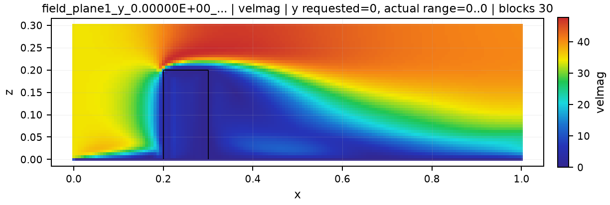
The reader was checked with ParaView 5.12. Labels and buttons can vary in other versions. If automatic format detection fails, show the organizer the mesh/solution filenames and your reader settings.
Check the force result numerically
For the unmodified full cases, the measured drag coefficients are 0.937563 (ICNS) and 1.558051 (CNS). Both values were identical with 1, 2 and 4 MPI processes. The CNS value is 3% lower than in the earlier package (1.606204), because CUBE now applies the CNS filter once per time step instead of four times.
From inside an ICNS run folder, this command prints your value:
tail -1 output_icns/force_lsurf_001.txt | awk '{print ($3+$9)/14.20032}'For CNS, use output_cns/eval_lsurf_001.txt instead.
See the validation report for timings, memory use and platform test limits, and the case instructions for the force-file columns. A short startup test is not expected to reproduce a full-run drag value.
Download GridGene
GridGene is the mesh generator for CUBE. It is a Windows program and is separate from the Docker package. This download is available only for the workshop.
GridGene-20200127-workshop.zip
The ZIP is locked with a password. The organizers will give you the password during the workshop.
Open the ZIP with 7-Zip, because some built-in ZIP tools cannot open this type of encryption. Keep all the files in one folder, and then run BCM3D_GridGene.exe.
Troubleshooting
Select the message that matches the issue. Retain the error text or a screenshot for the organizer.
“docker: command not found” or “docker is not recognized”
Complete the Docker Desktop installation, open it, then close and reopen Terminal/PowerShell so the updated command location is available.Confirm that Docker Engine and its command-line package were installed successfully for your distribution. On Ubuntu/Debian, return to step 2 and check the package-manager output. Repeat docker version. If it still fails, ask the organizer or IT to check the installation.
“Cannot connect to the Docker daemon” / “Docker is not ready”
Open Docker Desktop, wait for startup, and resolve any setup error. A restart may be needed after Windows WSL installation.Check the Docker service with sudo systemctl status docker --no-pager. If it is active, verify your account’s Docker-group membership and sign out/in after permission changes. Repeat docker version from your normal account; both Client and Server must appear.
Windows reports that WSL requires an update
Open Administrator PowerShell and run wsl --update. Restart if requested, then reopen Docker Desktop. If virtualization or organizational restrictions prevent startup, ask IT rather than changing firmware or security settings blindly.
Windows says “running scripts is disabled”
Unblock-File clears the download mark for this trusted workshop script; it does not change PowerShell’s execution policy. In the same normal PowerShell window, you can allow local scripts for this window only:
Set-ExecutionPolicy -Scope Process -ExecutionPolicy RemoteSignedRead the prompt and confirm only if your institution permits it. Then run Unblock-File .\run.ps1 and retry setup. This process-scoped setting ends when you close the window. If a managed policy still blocks the script, ask IT; do not change machine-wide policy.
Linux reports permission denied when accessing Docker
Confirm that the Docker service is running and that the administrator has granted Docker access to your account. Sign out and sign back in after a group-membership change, then retry docker version without sudo. Do not change the Docker socket to be writable by everyone.
The launcher reports rootless Docker or UID remapping
The current Linux launcher requires a standard local Docker Engine with host user IDs preserved. Rootless Docker and user-namespace remapping need a different launch configuration. Contact the organizer or administrator; do not disable an institution-required security configuration to continue.
“run.sh: No such file” / “run.ps1 is not recognized”
You are in the wrong folder, or you are still looking inside the ZIP. Repeat steps 4 and 5. The folder listing must contain the launcher. On Windows the command starts with .\, as in .\run.ps1 setup.
“Missing image archive” or “Missing archive checksum”
Use the complete ZIP for your computer, extract it fully, and keep its contents together. The .tar and .tar.sha256 files must be beside the launchers. Do not unpack the inner .tar or rename the files.
“Checksum does not match” / “FAILED” during setup
The image download does not match its check file. Download the complete kit again into a new folder and extract it. Preserve any existing runs folder. Do not edit the checksum to force it to pass.
“No such image: cube-workshop:…”
Docker cannot find the image name in the command. Run this command to see the CUBE images on your computer:
docker images cube-workshop- No image is listed: repeat step 6.
- The TAG does not contain
b6d6cf6a: you have the older package. Download the current package from step 3 into a new folder, then repeat steps 4 to 7. - The TAG ends in a different chip name (
arm64oramd64): choose your computer again in step 1, then copy the command again.
“mpiexec: command not found” or “cube: command not found”
You are outside the container. Repeat the docker run command from step 8. The prompt should end with /work$ before you continue. CUBE and MPI exist only inside the container.
CUBE cannot find the mesh, the STL file or the parameter file
You are in the wrong folder, or the copy step was skipped. Inside the container, run pwd and ls. The run folder must contain the .toml file, mesh_cylinder.bin and cylinder.stl.
The full simulation seems to stop printing
A full run can take many minutes. Check whether the step number in the first column still rises. Keep the laptop awake. If it prints an error or stops progressing for a long time, share run.log from your run folder with the organizer.
The simulation is killed or runs out of memory
Close other heavy applications and try a single process by changing -n 2 to -n 1. Ask the organizer to check memory available to Docker/WSL.
I cannot find a folder that starts with “/work/…”
/work is the container’s name for your extracted cube-laptop folder. For example, /work/my_runs/icns1 is cube-laptop → my_runs → icns1 on your laptop.
My figures or drag do not match the reference
Check the solver (ICNS or CNS), input values and end time. The ten-step smoke test and the shortened practice case have different results from the full example. For an ICNS speed plot, use the raw Momentum array and its Magnitude.
What does a setting in the .toml file mean?
Open the parameter guides in step 9. Find the table name in square brackets, such as [time], and then the key, such as T_end.